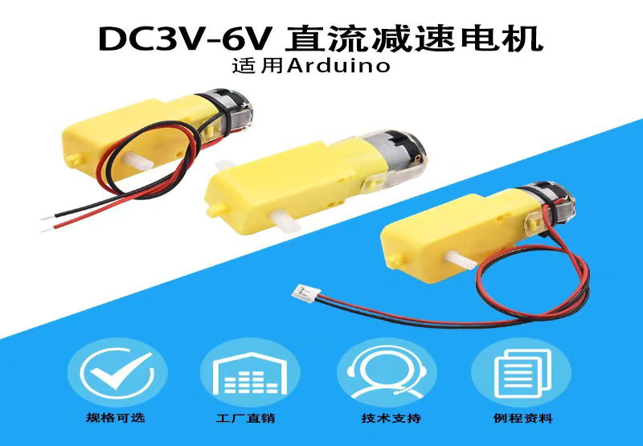

01
让它转起来
从一颗减速电机开始
所有课程的第一个练习，都是把一个东西弄转。不是机器人，不是小车，只是一颗三厘米见方的减速电机。
学生要在文档里回答三个问题：线接哪儿、电给多少、怎么让它听指令。三个都答对了，它才会转 —— 而那一声嗡响，比任何一张电路图都更能解释什么叫「驱动」。

① 线怎么接
红黑两根是电源与地。接反了不转，接对了也只是「能通电」，还不是「能听话」。
② 电给多少
DC3V–6V 是它的舒适区。3V 转得斯文，6V 转得利落；电压不足只会嗡嗡响。
③ 怎么控制
接上 Arduino 输出 PWM，才能让它转快转慢 —— 而不只是转或不转。